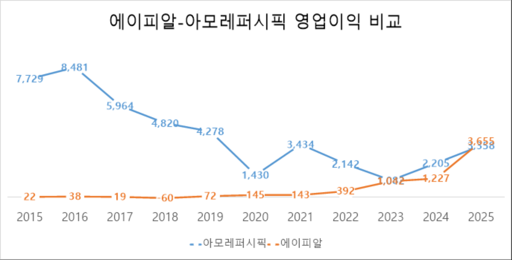
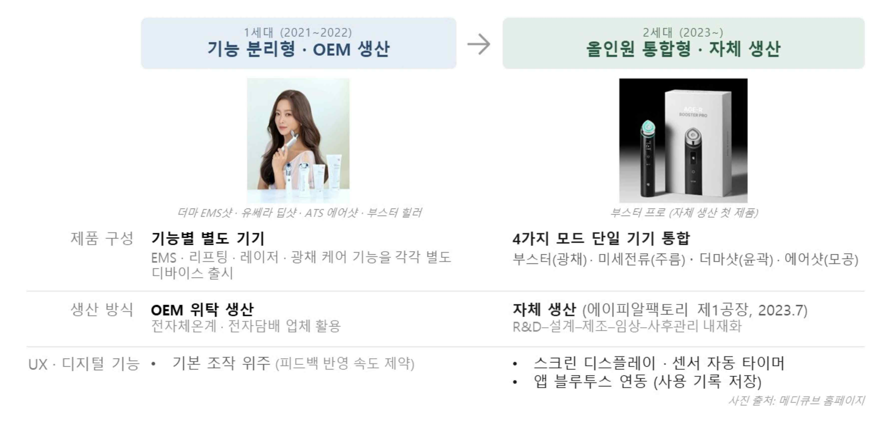
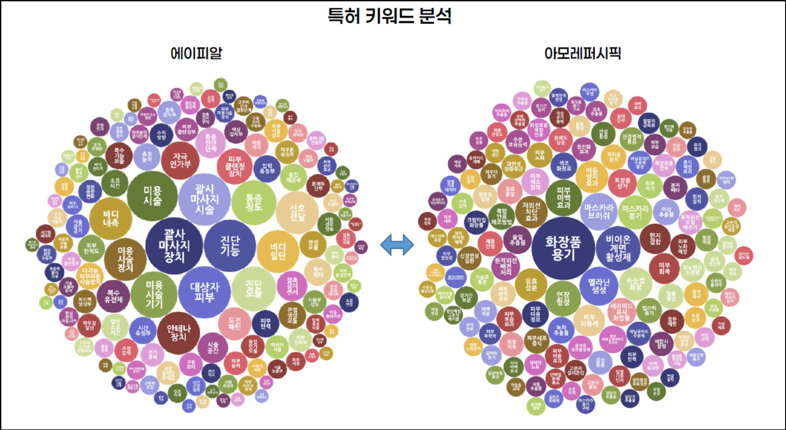
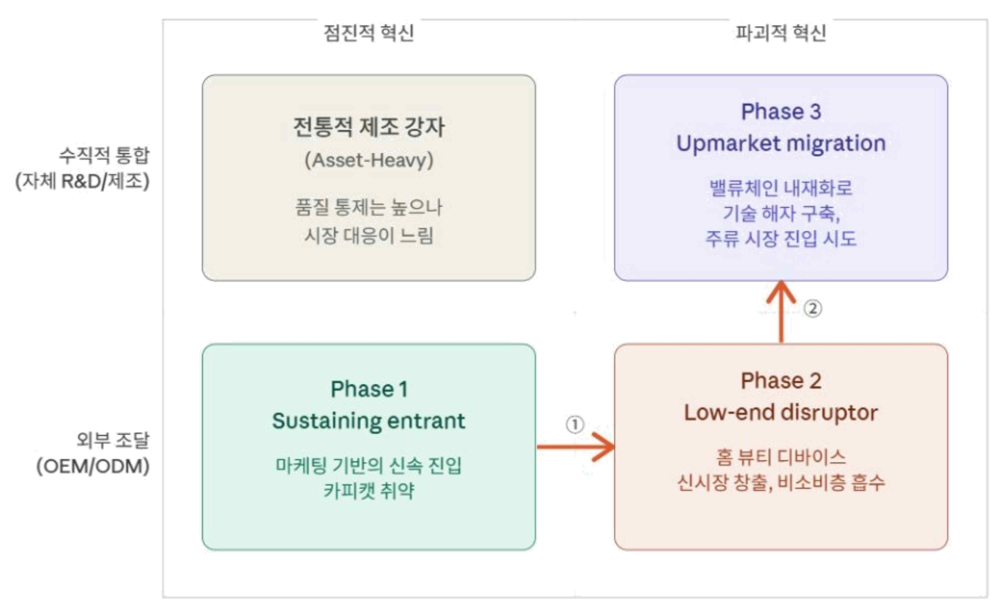

2025년 8월, 창업 10여 년의 에이피알(APR)이 'K뷰티 공룡' 아모레퍼시픽의 시가총액을 처음으로 추월했다. 본 연구는 에이피알의 성장 전략을 Christensen의 파괴적 혁신 이론과 Moore의 캐즘 이론으로 분석하고, 에이피알 CFO·아모레퍼시픽 관계자·하버드경영대학원 교수 인터뷰와 특허 분석을 통해 그 성장 궤적을 '존속적 진입 → 파괴적 혁신을 통한 신시장 창출 → 주류 시장 진입 시도'라는 전략 전이 매트릭스로 일반화한다.
- 본 연구는 2014년 창업해 업력 10여 년 만에 K뷰티 전통 강자 아모레퍼시픽의 시가총액을 추월한 에이피알(APR)의 성장 전략을 Christensen의 파괴적 혁신 이론과 Moore의 캐즘 이론으로 분석한다.
- 에이피알은 OEM/ODM 기반 화장품 브랜드에서 출발해 카피캣 위기를 계기로 홈 뷰티 디바이스라는 새로운 카테고리를 창출하며 고가 피부과 시술 시장의 비소비층을 흡수한 후, R&D부터 제조·임상·사후관리까지 전 밸류체인을 내재화하며 기술적 해자를 구축했다.
- 뷰티 디바이스와 전용 화장품, 앱 연동, 루틴 가이드를 결합한 Whole Product 전략으로 캐즘을 돌파해 대중 시장에 안착했으며, 현재는 PDRN 바이오 소재의 자체 생산을 기반으로 의료기기 영역까지 확장하며 주류 시장 진입을 시도하고 있다.
- 본 연구는 이 성장 궤적을 '존속적 진입 → 파괴적 혁신을 통한 신시장 창출 → 주류 시장 진입 시도'라는 전략 전이 매트릭스로 일반화한다.
- 혁신의 방향(What)과 생산 방식(How)의 순차적 전환, 새로운 카테고리 창출의 필요성, Whole Product 시스템 설계의 중요성을 경쟁우위를 구축하려는 K뷰티 기업에 시사점으로 제시한다.
Ⅰ. 서론 — 시가총액 역전이 던진 질문
에이피알은 2024년 2월 코스피 상장 후 약 1년 반 만에 주가가 250% 이상 올라 2025년 8월 6일 종가 기준 시총 7조 9,322억 원으로 아모레퍼시픽(7조 5,339억 원)을 처음으로 제쳤고, 2026년 4월 24일 기준 시총은 16.85조 원에 달한다. 매출 규모는 여전히 아모레퍼시픽(2025년 4조 6,232억 원)이 에이피알(1조 5,273억 원)보다 훨씬 크지만, 영업이익은 3,680억 원 대 3,654억 원으로 거의 대등해졌다. 단순히 잘 파는 화장품 브랜드를 넘어 뷰티 디바이스, 의료기기까지 아우르는 뷰티테크 기업으로의 진화 가능성이 시가총액에 선반영된 셈이다.

K뷰티 산업 전체도 구조적 성장기에 있다. 한국 화장품 수출은 2015년 29억 달러에서 2024년 102억 달러로 약 3.5배 성장해 세계 3위로 뛰어올랐고, 무역특화지수(TSI)는 0.73으로 반도체(0.39)를 크게 상회한다. 그러나 산업의 성장이 곧 개별 기업의 성공을 보장하지는 않는다.
Ⅱ. 이론적 프레임워크
2.1 파괴적 혁신(Disruptive Innovation)
Christensen(1997)은 기존 주류 제품보다 성능은 낮지만 단순함·접근성·합리적 가격이라는 새로운 가치로 시장 구조 자체를 바꾸는 혁신을 '파괴적 혁신'으로 정의했다. 진입 경로는 두 가지다. 주류 제품이 대다수 고객에게 필요 이상의 성능을 제공하는 오버슈팅 상태를 공략하는 로우엔드 파괴, 그리고 제품이 너무 비싸거나 복잡해 아예 소비하지 못하던 비소비층을 새로운 시장으로 끌어들이는 신시장 파괴다. 파괴적 혁신자는 '충분한 성능(Good enough)'의 제품으로 시장 하단부나 비소비층에 발판을 마련한 뒤 기술과 성능을 빠르게 개선해 주류 고객까지 흡수하는 상향 이동(Upmarket migration)에 이른다. 기존 강자가 가장 수익성 높은 고객에 집중하는 합리적 선택 탓에 초기 파괴적 혁신을 체계적으로 무시하게 되는 구조를 Christensen은 '혁신자의 딜레마'라 불렀다.
2.2 캐즘(Chasm) 이론과 Whole Product
Moore(1991)는 기술 수용 주기상 초기 수용자(Early Adopters)와 실용주의적 다수(Early Majority) 사이에 존재하는 구조적 단절을 캐즘(Chasm)이라 명명했다. 초기 수용자는 잠재력만으로도 불완전한 제품을 받아들이지만, 실용주의적 다수는 검증된 솔루션과 완결된 사용 경험을 요구하므로 초기의 성공이 대중 시장 확산으로 자연히 이어지지 않는다. Moore가 제시한 돌파 전략이 Whole Product(완전한 제품)로, 핵심 제품(Core)·기대 제품(Expected)·확장 제품(Augmented)·잠재 제품(Potential)의 네 층위를 갖춘 완결된 시스템을 뜻한다. 실용주의적 다수는 핵심 기술이 아니라 이 Whole Product의 완성도를 기준으로 구매를 결정한다.
2.3 이론의 적용
에이피알이 고가 피부과 시술 시장의 하단부에서 홈 뷰티 디바이스라는 대안을 제시해 비소비층을 흡수하고 시장 자체를 새로 만든 뒤 주류 시장으로 올라가는 경로는, Christensen이 말한 로우엔드·신시장 진입에서 상향 이동으로 이행하는 파괴적 혁신의 전형적 궤적과 일치한다. 동시에 1세대 디바이스가 얼리 어답터의 호응을 얻은 뒤 '디바이스–앱 연동–데일리 루틴 가이드'라는 완결된 시스템을 구축하며 대중 시장에 안착한 과정은 캐즘 이론과 Whole Product 전략으로 자연스럽게 설명된다. 파괴적 혁신이 에이피알의 거시적 성장 궤적을 포착한다면, 캐즘 이론과 Whole Product 전략은 대중 시장 진입을 이끈 구체적 실행 전략을 설명한다.
Ⅲ. 산업 분석 — H&B 스토어가 연 '언더독의 시대'
한국 화장품 산업은 지난 20여 년간 세 차례의 구조적 전환을 겪었다. 2000년대 초 저가형 원브랜드숍(미샤, 더페이스샵)의 등장과 함께 브랜드와 생산이 분리되며 코스맥스·한국콜마 중심의 ODM 위탁 생산 구조가 일반화됐고, 2010년대 올리브영 등 H&B스토어의 급성장이 자본과 매장 네트워크가 부족한 중소 브랜드에 새로운 유통 접점을 열었다. 2010년대 중후반부터는 자사몰 중심의 D2C 모델과 SNS 바이럴 마케팅이 결합한 디지털 네이티브 시대가 본격화됐다. 에이피알은 바로 이 세 번째 전환기에 등장한 대표적 사례다.
Ⅳ. 사례 분석
4.1 에이피알의 초기 성공과 캐즘 직면 — 카피캣 위기를 혁신의 기회로
2014년 김병훈 대표가 론칭한 에이프릴스킨은 '매직스노우쿠션'의 인플루언서 비디오커머스 바이럴로 창업 첫해 매출 2억 원에서 이듬해 125억 원으로 성장했고, 매출의 90%가 자사몰에서 발생했다. 2016년 론칭한 더마 코스메틱 브랜드 메디큐브의 '제로모공패드'는 2017년 아마존 진출의 시동을 걸었다.
그러나 제로모공패드가 히트하자 제조 역량이 높은 OEM·ODM 공장들이 순식간에 유사 제품을 생산해 H&B스토어 매대를 채웠다. 특허를 보유해도 형태·제형·성분을 조금만 변형하면 회피가 가능했다. 이 카피캣의 범람은 "국내 화장품 산업의 구조상 단순히 패키징, 성분, 제형 혁신만으로는 지속가능한 우위를 만들기 어렵다"는 뼈아픈 교훈을 남겼다.
4.2.1 피부과 시술의 틈새 겨냥
화장품 시장의 연평균 성장률이 3~4%에 머무는 동안 홈 뷰티 디바이스·의료기기 시장은 연 10~25%씩 성장하고 있었다. 고주파 리프팅 시술 써마지는 한국에서 90만~200만 원, 미국에서는 360만~730만 원 수준이고, 미국에선 피부과 방문에 차로 4~8시간 이동해야 하는 지역도 있다. 2021년 3월 출시된 홈 뷰티 디바이스 브랜드 '메디큐브 에이지알(AGE-R)'은 20만~30만 원대 가격에 집에서 5~10분 사용으로 피부과 시술과 스킨케어 사이의 적절한 효능을 제공하며, 비용·통증·접근성 부담으로 시술을 시도하지 못하던 비소비(non-consumption) 집단을 홈 뷰티라는 새로운 시장으로 끌어들였다. 연간 기기 판매량은 첫해 5만여 대에서 2022년 약 60만 대로 증가했다.
흥미로운 점은 기존 강자의 인식이다. 아모레퍼시픽 관계자는 "에이피알과는 근본적으로 전략 방향이 다르기 때문에 직접적인 위협으로 인식하고 있지 않다"고 밝혔다. 가장 수익성 높은 고가 브랜드(설화수 29%, 헤라 15%)에 자원을 집중하는 것이 합리적이기에 시장 하단부의 파괴자를 경쟁 대상으로 인식하지 못하는 것 — Christensen이 지적한 '혁신자의 딜레마'와 정확히 맞닿아 있다.
4.2.2 전 밸류체인 내재화로 경쟁력 강화
에이지알 1세대는 홈 뷰티 디바이스 경험이 있는 OEM사가 없어 전자체온계·전자담배 업체들과 함께 만들었다. 그러나 요구 기술 수준을 OEM이 따라오지 못하고 기술·IP 귀속 문제가 생기자, 에이피알은 2세대부터 R&D–설계–제조–임상–사후 관리까지 전체 밸류체인을 내재화하는 전략적 전환을 단행했다. 2023년 7월 '에이피알팩토리 제1공장'을 준공하고 첫 자체 생산 디바이스 '부스터 프로'를 출시했으며, 자체 R&D 센터 ADC(APR Device Center)의 석·박사급 인력 30~40명이 기술 개발과 특허 출원을 총괄한다(2025년 말 기준 국내 133건, 해외 219건). 기업부설연구소 글로벌피부과학연구원은 인체 적용 시험을 직접 설계·수행해 그 결과를 한국미용학회지에 등재하며 효능을 과학적으로 입증했다.

4.2.3 에이피알과 아모레퍼시픽의 특허 비교 분석
아모레퍼시픽의 IPC 상위 분류는 A61K(화장품 조성물·의약 제제)가 전체의 약 61%를 차지하는 전형적인 화장품 기업의 특허 구조다. 반면 에이피알은 A61N(전기치료·자기치료 장치) 39건, A61H(물리치료·마사지 장치) 30건 등 전기자극·물리치료 기반의 피부 관리 기기 기술에 집중돼 있다. 아모레퍼시픽이 '더 좋은 성분, 더 나은 패키지'라는 존속적 혁신의 축 위에서 IP를 쌓아간다면, 에이피알은 완전히 다른 방향의 기술적 해자를 구축하고 있는 것이다. 기존 강자와 전혀 다른 가치 네트워크에서 성장하기 때문에 기존 강자의 레이더에 잡히지 않는 파괴적 혁신의 전형적 패턴이 특허 데이터로 확인된다.

4.2.4 Whole Product 전략: 제품 넘어 '시스템' 판매
Moore의 캐즘 이론에 따르면 초기 수용자와 실용주의적 다수 사이에는 구조적 단절이 존재하며, 실용주의적 다수는 핵심 기술이 아닌 Whole Product의 완성도를 기준으로 구매를 결정한다. 에이피알은 핵심 제품(에이지알 디바이스의 기술 차별성)에 더해, 임상 근거로 검증된 효능·기기 신뢰성을 충족하고(기대 제품), 앱 블루투스 연동·데일리 루틴 가이드·1:1 전문가 케어 채널·B&A 후기 커뮤니티로 '어렵고 실패하기 쉬운 기기'라는 진입 장벽을 낮췄으며(확장 제품), 약 5년간 10여 종의 디바이스를 연속 출시해 장기적 기대를 제시했다(잠재 제품).
4.2.5 PDRN 밸류체인으로 주류 시장 진입 / 4.2.6 리스크
2025년 해외 매출 비중 80%를 달성한 에이피알은 이제 조직 재생과 항염 효과로 주목받는 PDRN·PN 소재의 자체 생산에 착수하며 '소재–기기–브랜드'가 연결되는 생태계를 구축하고 있다. 경기도 평택의 1,296평 생산시설을 기반으로 B2B 소재 사업과 PDRN 함유 화장품을 전개하고, 궁극적으로 의료기기(스킨부스터) 품목 허가를 확보해 주류 시장에 진입하는 Upmarket migration을 시도한다. 다만 연구는 리쥬란 등 선발주자가 장악한 레드오션 진입 위험, 기존 핵심 가치('간편함·가성비')와 상충하는 오버슈팅 위험, '화장품 vs 재생 바이오' 사이의 정체성 혼란과 재무적 리스크를 함께 경고한다.
Ⅴ. 결론 및 시사점
5.1 에이피알 성장 전략의 일반화: 전략 전이 매트릭스
에이피알의 성장 궤적은 ① 진입기(Sustaining Entrant) — OEM/ODM 위탁과 D2C 마케팅의 자산 경량화 모델로 신속 진입, ② 확장기(Low-end Disruptor) — 혁신의 축을 점진적에서 파괴적으로 전환해 홈 뷰티 디바이스 신시장 창출, ③ 도약기(Upmarket Migration) — 생산 방식의 축을 외부 조달에서 수직적 통합으로 전환해 주류 시장 진입 시도, 라는 세 단계의 전략적 전이로 설명된다. 핵심은 '혁신의 성격'과 '생산 방식'이라는 두 축을 순차적으로 이동했다는 점이다.

5.2 시사점
- 새로운 카테고리를 창출하라. 모방이 빠르게 일어나는 뷰티 산업에서 성분·제형의 점진적 개선만으로는 우위를 지킬 수 없다. 하버드경영대학원 레베카 카프 교수는 "뷰티 산업에서 점진적 제품 개발은 너무 쉽게 복제된다. 대형 뷰티 기업의 리더들에게 다음 카테고리를 고민해야 한다고 조언하고 싶다"고 지적했다.
- Whole Product 시스템을 설계하라. 캐즘 돌파의 핵심은 디바이스 하드웨어의 기술력만이 아니라, 디바이스·화장품·앱 연동·루틴 콘텐츠를 포함한 완결된 사용 경험이었다.
- What과 How는 순차적으로 전환하라. 처음부터 카테고리 창출과 밸류체인 내재화를 동시에 시도했다면 자본과 조직 역량의 한계로 둘 다 실패했을 가능성이 높다. OEM으로 시장성을 검증한 뒤 내재화에 착수하는 단계적 접근이, 자원이 제한된 기업이 리스크를 관리하며 성장하는 현실적 경로다.